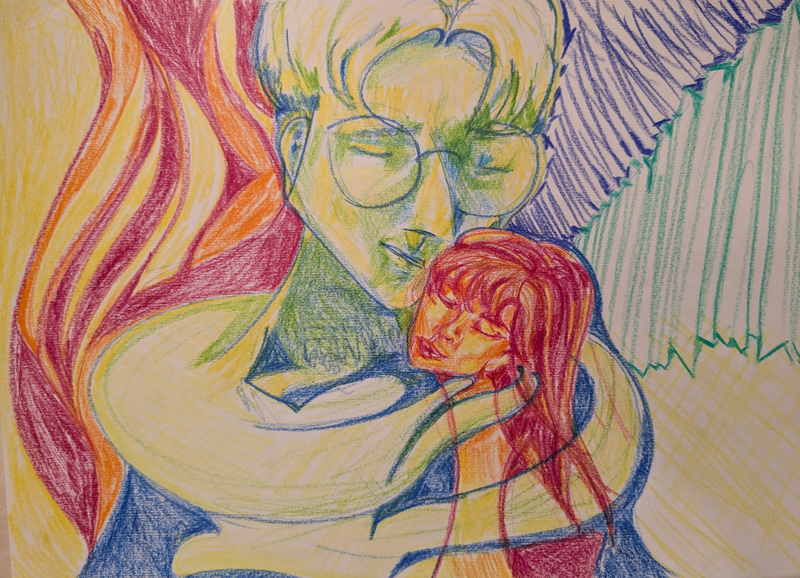

Preboda
Pub Korrigan
La Adrada
A partir de las 20:00
Ver el Pub Korrigan en el mapa¡Que sí, que nos casamos!
La Adrada, Ávila
Ya se acerca la fecha y nos hace muchísima ilusión compartir este día con vosotros. ¡Tenemos muchas ganas de celebrarlo juntos!
Encuesta obligatoria para todas las personas invitadas.
Ir a la encuesta
Hora de La Adrada
Hasta el sí, quiero · 17:30, hora de La Adrada
01 / El finde
El viernes calentamos motores.
El sábado viene lo de los anillos.
Pub Korrigan
La Adrada
A partir de las 20:00
Ver el Pub Korrigan en el mapaFinca El Cabildo
La Adrada, Ávila
Bienvenida a las 17:00
Ceremonia a las 17:30
02 / El sábado
Sábado 17 de octubre de 2026
Horarios aproximados
Fotos y tal, que todavía estaremos guapos.
Nos casamos. ¡Qué fuerte!
Por fin podemos brindar.
Cogemos fuerzas.
Nos vemos en la pista.
A las 04:00 del domingo 18, cada mochuelo a su olivo. Autobús de vuelta a La Adrada.
03 / Ida y vuelta
De La Adrada a la finca y de la finca al pueblo. Elegid la opción que mejor os venga.
Hora y punto de salida de la ida por confirmar.
¿Te retiras antes del último baile?
Después de la cena habrá un taxi gratuito en la finca para los invitados que quieran volver a La Adrada antes de que termine la fiesta.
También podéis llegar a Finca El Cabildo en vuestro propio coche.
Os dejamos la ubicación para preparar el camino.
Cómo llegar a la finca04 / Nosotros
Algunas fotos de estos años juntos.
Desliza o usa las flechas.
1 /
El siguiente paso es vuestro
Encuesta obligatoria
Necesitamos que todas las personas invitadas completen la encuesta de asistencia. Rellenadla cuanto antes para ayudarnos a organizarlo todo.
Completar la encuestaDe corazón
Si queréis hacernos un regalo, os dejamos aquí nuestra cuenta. Gracias por acompañarnos y por todo el cariño que nos dais.
Datos de la cuenta
En el concepto, poned vuestros nombres para saber de quién viene el regalo.